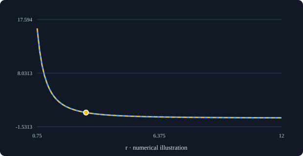

PROOFLENS · BUILDER FIRST USE
Use a small public or synthetic Lean statement to answer your own question, then save a qualified chart alongside your theorem documentation.
Open ProofLens · Download the example and full guide
Open “Explore your own Lean”, paste this fixture, and choose “Visualize statement”. Then try a statement from your own work.
theorem quarter_after_doubling (C r : ℝ) (hC : 0 < C) (hr : 0 < r) : C / ((2 * r) * (2 * r)) = (C / (r * r)) / 4 := by sorry
Set C=36, r=3: both sides are 1. Choose r as the horizontal axis. Doubling r to 6 makes both sides 0.25. At r=0, the stated positive-r assumption fails and the numerical division is undefined.

Use “Save chart” and “Save explanation”. Keep the statement, assumptions, proof status and source revision with the result. The download includes a plain HTML embedding recipe and reproducible CLI figures.
For leanblueprint authors, start with a linked companion page. This is a manual documentation workflow, not a tested leanblueprint plugin.
What did you want to understand? What became clearer? Where did you stop? A precise failure helps us fix the next barrier.
Share a first-use report · Join the community discussion
Optional public feedback; use public or synthetic inputs. No email or private research needed. We ask separately before showcasing your words.